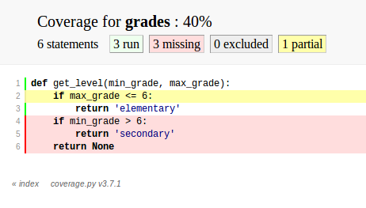

Python Testing Tools
This talk
- py.test
- test marking & skipping
- parametrized tests
- fixtures
- coverage
- tox
- mock & pretend
- WebTest
How
- Introduce a feature
- Example(s)
- Further exploration
- Link to docs
- Python 3
Docs links on final slide. No stress; doc links will be live in online slides.
All code is Py3, but will note Py2 differences.
Me
- Writing Python since 2002.
- Professionally since 2007.
- Mostly web development.
- OSS: pip, virtualenv, Django
py.test
grades.py
1 def get_level(min_grade, max_grade): 2 if max_grade <= 6: 3 return 'elementary' 4 if min_grade > 6: 5 return 'secondary' 6 return None
test_grades.py
1 import grades 2 3 def test_get_level(): 4 assert grades.get_level(2, 5) == 'elementary'
py.test will find and run tests in any file whose name begins with "test_". Test functions also need to have names beginning with "test".
Matching up "grades.py" with "test_grades.py" is not necessary, though often helpful to keep tests organized.
(These naming conventions are customizable.)
Low-boilerplate tests: plain functions, plain asserts.
1 $ pip install pytest1 $ py.test 2 ============== test session starts ======================== 3 platform linux -- Python 3.3.2 -- py-1.4.20 -- pytest-2.5.2 4 collected 1 items 5 6 test_grades.py . 7 8 ============== 1 passed in 0.01 seconds ===================
To run the tests, just "pip install pytest" and run "py.test" - it will automatically find and run your tests. Here it runs our one test, which passes!
Helpful failures
1 $ py.test 2 ================ test session starts ====================== 3 platform linux -- Python 3.3.2 -- py-1.4.20 -- pytest-2.5.2 4 collected 1 items 5 6 test_grades.py F 7 8 ================ FAILURES ================================== 9 ________________ test_get_level ____________________________ 10 11 def test_get_level(): 12 > assert grades.get_level(2, 5) == 'secondary' 13 E assert 'elementary' == 'secondary' 14 E - elementary 15 E + secondary 16 17 test_grades.py:4: AssertionError 18 ================ 1 failed in 0.02 seconds ==================
Python test runners
A brief synopsis and digression
- We saw py.test in action: pip install pytest; py.test
- Nose is similar: pip install nose; nosetests
- Both can run simple function tests with asserts.
- unittest is in the standard library, similar to "xUnit" test frameworks in various languages. Tests require a bit more boilerplate. python -m unittest discover
- Others: twisted.trial, zope.testrunner
If all these choices are overwhelming, don't worry about it. They're all fine, just pick one and run with it.
My choice is py.test, so that's what I'll be covering today.
Choosing tests to run
- Name a test file: py.test path/to/test_grades.py
- Name a directory: py.test some/tests/
- Match test function/class name: py.test -k grades
- Select tests by "mark": py.test -m "not slow"
Flexible matching of tests to run - very important for fast edit/test cycles, especially in larger projects.
Select by mark - which raises the question...
Wait, what's a "mark"?
1 import pytest 2 3 @pytest.mark.slow 4 def test_something_very_slow(): 5 """Can download the internet.""" 6 # ...
- py.test -m slow will run only tests with this mark.
- py.test -m "not slow" will run only tests without it.
- Can also use and / or for conditions with multiple marks.
You can use any mark names you want (valid Python identifiers) or configure a restricted set for the project in your pytest.ini file.
pytest.ini
1 [pytest] 2 minversion = 2.4.2 3 addopts = --strict --cov-report html --cov myproj 4 norecursedirs = .* _* selenium node_modules qunit 5 python_files = test_*.py 6 python_classes = Test 7 python_functions = test 8 markers = 9 slow: mark a test as slow 10 web: mark a test as a web test
All optional.
If you use markers, recommended to list valid markers so there's one reference point for all markers used, and typos become errors (with strict). At some point in the future pytest may require markers to be registered.
Classes?
class TestPager: def test_num_pages(self): """Can calculate total number of pages.""" assert pager(count=23, pagesize=10).num_pages == 3 def test_item_range(self): """Can calculate range of items to be shown.""" # ...
- Can use classes to group related tests, but not required.
- Unlike unittest, no special TestCase class to inherit from.
- Avoid using classes for setup/teardown (use fixtures).
- Avoid using classes to parametrize tests (use parametrized tests).
Test skipping
Not all tests can run in all environments.
1 import sys 2 import pytest 3 4 @pytest.mark.skipif( 5 sys.platform != 'win32', reason='Windows specific') 6 def test_updates_registry(): 7 """Checks and updates registry entries.""" 8 # ...
Can mark any test to be skipped under some conditions.
1 $ py.test 2 ================ test session starts ====================== 3 platform linux -- Python 3.3.2 -- py-1.4.20 -- pytest-2.5.2 4 collected 4 items 5 6 test_grades.py ...s 7 8 ================ 3 passed, 1 skipped in 0.02 seconds ======
1 $ py.test -rs 2 ================ test session starts ====================== 3 platform linux -- Python 3.3.2 -- py-1.4.20 -- pytest-2.5.2 4 collected 4 items 5 6 test_grades.py ...s 7 ================ short test summary info ================== 8 SKIP [1] /.../_pytest/skipping.py:132: Windows specific 9 10 ================ 3 passed, 1 skipped in 0.02 seconds ======
Skipped tests show up as an 's' instead of a '.'.
Run py.test with '-rs' to show reasons for skipped tests.
Expected failures
Sometimes we expect a test to fail, for now.
1 import sys 2 import pytest 3 4 @pytest.mark.xfail( 5 sys.version_info >= (3, 4), reason="Buggy on Py 3.4") 6 def test_something_that_doesnt_work_yet_on_python_34(): 7 pass # ...
- Just like -rs for skips, -rx will provide additional info on expected failures.
- xfail tests will report an X (xpass or "unexpected pass") if they pass.
- Use --runxfail to run xfail tests normally (report failures as failures).
May be a low priority bug that we plan to fix, or a feature we haven't fully implemented yet.
Can also unconditionally xfail, provide only a reason.
Marking classes
import pytest @pytest.mark.xfail class TestPager: def test_num_pages(self): pass # ... def test_item_range(self): pass # ...
- Can apply a mark to an entire test class.
- Equivalent to applying it to each individual test method.
Parametrized tests
- Running a set of similar tests with an array of different inputs and outputs.
- Running the same test multiple times under different configurations/conditions.
Naive approach
1 def test_sum(): 2 tests = [ 3 ([], 0), 4 ([1, 2], 3), 5 ([0, 2], 2), 6 ([-4, 3, 2], 1), 7 ] 8 for inputs, output in tests: 9 assert sum(inputs) == output
- Accomplishes the goal, but...
- Early failure short-circuits (don't know which others would have failed).
- For more complex cases, don't get e.g. separate setup/teardown.
- Ideally these would each be treated as a separate test.
test_sum.py
1 import pytest 2 3 @pytest.mark.parametrize( 4 'inputs,output', 5 [ ([], 0), 6 ([1, 2], 3), 7 ([0, 2], 2), 8 ([-4, 3, 2], 2) ]) 9 def test_sum(inputs, output): 10 assert sum(inputs) == output
1 $ py.test test_sum.py 2 =============== test session starts ======================= 3 platform linux -- Python 3.3.2 -- py-1.4.20 -- pytest-2.5.2 4 collected 4 items 5 6 test_sum.py ...F 7 8 ================ FAILURES ================================= 9 ________________ test_sum[inputs3-2] ______________________ 10 inputs = [-4, 3, 2], output = 2 11 12 @pytest.mark.parametrize( 13 'inputs,output', 14 [ ([], 0), 15 ([1, 2], 3), 16 ([0, 2], 2), 17 ([-4, 3, 2], 2) ]) 18 def test_sum(inputs, output): 19 > assert sum(inputs) == output 20 E assert 1 == 2 21 E + where 1 = sum([-4, 3, 2]) 22 23 test_sum.py:13: AssertionError 24 ================ 1 failed, 3 passed in 0.02 seconds =======
py.test fixtures
- Each test should run in a predictable, repeatable, baseline environment.
- Some tests need resources (a database, the filesystem, an initialized code object) that may require some setup and teardown in order to provide a predictable environment.
- py.test fixtures are a modular system for defining such resources and allowing tests to request access to them.
Example: tempdir
1 import shutil 2 from tempfile import mkdtemp 3 import pytest 4 5 @pytest.yield_fixture 6 def tempdir(): 7 temp_dir_path = mkdtemp() 8 yield temp_dir_path 9 shutil.rmtree(temp_dir_path)
1 import os 2 3 def test_write_config(tempdir): 4 """Writes config to the given file path.""" 5 config_file_path = os.path.join(tempdir, 'test.cfg') 6 # ...
Py.test actually provides this as a built-in fixture; but it's a nice simple example, so we'll reimplement it.
This is a new way to define fixtures, using yield, thus the name of the decorator.
A test requests the fixture by asking for an argument of that name, py.test uses introspection to check the argument names and provide the right fixture values.
Each test that requires the fixture will get a new one; the setup and teardown will be re-executed for every test.
(The built-in tempdir fixture is a little more complex than this; it leaves the last few temp dirs laying around to help with debugging failing tests, and cleans up older ones only.)
Fixture lifecycle scopes
- Default scope is "function": new fixture will be setup and torn down for each test that requests it.
- Other scopes: "class", "module", "session".
- Setup new fixture once per test class, test module, or test session.
Session-scope fixture
1 import pytest 2 3 @pytest.yield_fixture(scope='session') 4 def db(): 5 create_test_database() 6 conn = get_test_database_connection() 7 yield conn 8 destroy_test_database()
1 def test_query(db): 2 pass # ...
I find few good use cases for class or module-scope fixtures; I'll just give an example of a session-scope fixture.
Creating and destroying a database is too slow to do every test; just want to create the test db once at start of test run and destroy it at the end. A session-scoped fixture allows this.
Fixture is lazy: only set up when a test asks for it. So if we run a subset of our tests that don't ask for the db fixture, no test db will be created for that run - a nice speed boost.
Problem: database state is not reset between tests. If we add rows in one test, that could disrupt another test. Violates goal of a repeatable, predictable environment for each test.
Paired fixtures
1 import pytest 2 3 @pytest.yield_fixture(scope='session') 4 def db_conn(): 5 create_test_database() 6 conn = get_test_database_connection() 7 yield conn 8 destroy_test_database() 9 10 @pytest.yield_fixture 11 def db(db_conn): 12 yield db_conn 13 db_conn.truncate_all_tables()
1 def test_query(db): 2 pass # ...
Session-scope fixture to create and teardown the test database.
Function-scope fixture that uses the session-scope fixture and passes it on to each test, also restoring the database state after each test.
(Might also be other approaches to restoring state, like running each test in a transaction and rolling it back.)
Parametrized fixtures
1 @pytest.yield_fixture( 2 params=['sqlite', 'mysql', 'postgres']) 3 def db_conn(request): 4 if request.param == 'sqlite': 5 conn = create_sqlite_test_database() 6 elif request.param == 'mysql': 7 conn = create_mysql_test_database() 8 elif request.param == 'postgres': 9 conn = create_postgres_test_database() 10 yield conn 11 destroy_test_database(conn)
Say we have some tests using a database, and we want to automatically run all of those tests against all of our supported databases.
We can take a db fixture like we saw above, and parametrize it.
Now any test that uses this fixture will run three times, once with each value for request.param.
Tests that don't use the db fixture unaffected.
py.test plugins
py.test review
- write tests as simple functions with asserts.
- run the specific tests you want.
- get helpful debugging information when tests fail.
- mark tests to be skipped or as expected-fails.
- modular fixtures for resources required by tests.
- parametrize individual tests and fixtures.
- many, many plugins.
Measuring test coverage
How much of my production code is exercised by my test suite?
1 $ pip install coverage 2 3 $ coverage run --branch `which py.test` 4 5 $ coverage report --include=grades.py 6 Name Stmts Miss Branch BrMiss Cover 7 ------------------------------------------ 8 grades 6 3 4 3 40%
$ coverage html
100% coverage not guarantee of adequate tests, but roughly minimum bound.